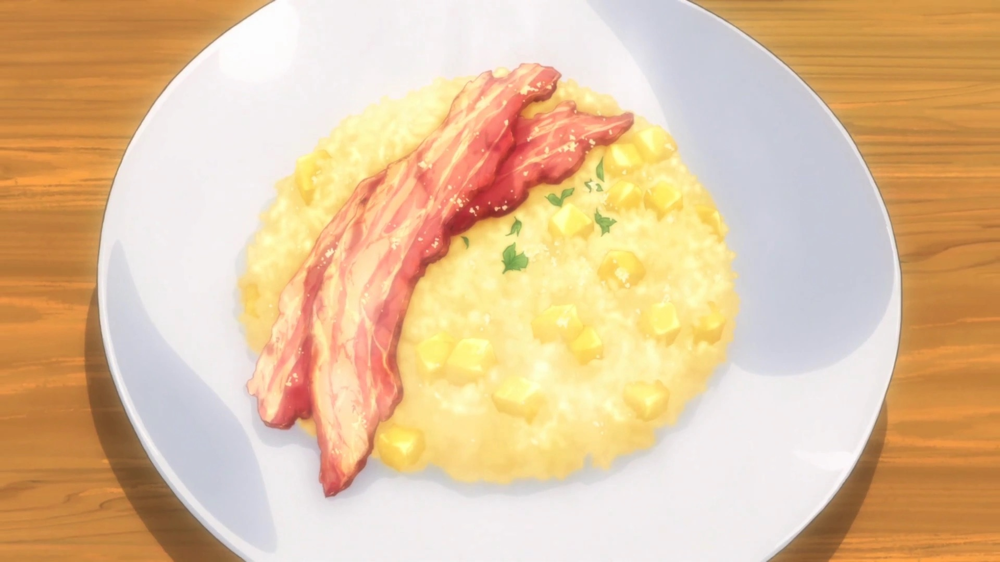

Apple Risotto

From Episode 16. Apple Risotto is a dish made by Sōma Yukihira during his a cooking duel against his father, Jōichirō Yukihira.
Risotto is an Italian dish of rice cooked in stock, sometimes with other ingredients such as meat or vegetables.
Sōma improvised this dish with the challenge to create a breakfast dish to rejuvenate the eater.
Ingedients
- Apples
- Lemon Juice
- Onion (Sauteed)
- Butter
- Rice
- White Wine
- Apple Juice
- Water
- Granulated Consomme
- Salt and Pepper
Directions
- Cook bacon in a pan until it is crispy and set aside.
- Peel apple and dice it into small cubes.
- Mince onion.
- Heat butter in a pan and saute the onions.
- Add the rice to the same pan and cook until it is transparent.
- Add the white wine to the pan and cook it until the alcohol is burned off.
- Mix the apple juice, water, and consomme. Slowly add this 1/8 of a cup at a time to the pan while it simmers on low heat until all the liquid is absorbed.
- Add the apple and lemon juice to the pan and season to taste with salt and pepper.
- Plate and add the cooked bacon to the top.
- Sprinkle on some black pepper and powdered cheese (optional).